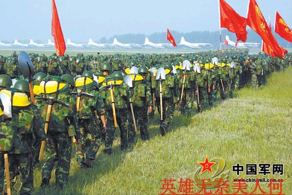
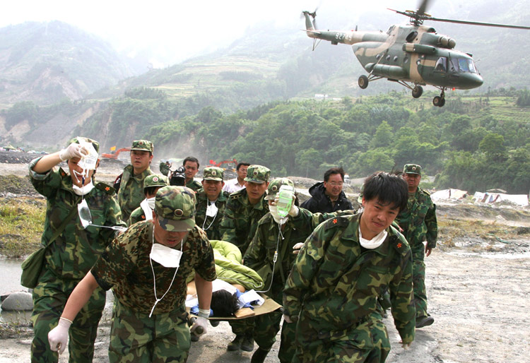
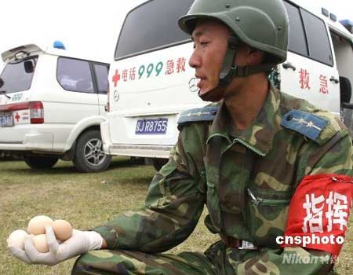

四川大地震发生后，十多万解放军将士为抢救灾区民众的生命做出了巨大贡献。在血色的悲壮中，绿色的迷彩服成了一道最为威武雄壮的风景线。
无论是外媒记者，还是国外救援队员，面对忘记自我、勇于牺牲的解放军官兵无不唏嘘感叹。日本救援队的两名女队员是第一次与解放军士兵面对面，她们回国后告诉日本媒体说，解放军士兵的微笑让她们铭记在心。
对此，马来西亚《光明日报》发表评论文章说，西方媒体实地采访四川赈灾时，惊讶地发现中国政府的赈灾效率和灾民们的自律，他们更惊讶的是，数万解放军进入灾区救灾，竟然没有带枪和任何武器。
西方媒体记者的惊讶是有理由的，不要说是贫穷的非洲国家士兵进入灾区是全副武装，就连世界上最富裕最强大的美国，他们的军人进入灾区救灾也是荷枪实弹的。2005年美国新奥尔良水灾时，国民警卫队就是开着装甲车进入的。他们甚至扬言，对于胆敢哄抢救灾物质的暴徒就要格杀忽论。
在中国，无论是水灾，还是雪灾，抑或是今天的四川大地震，解放军士兵们进入灾区，除去救灾用的必备工具外，都是不拿任何武器的。因为外媒记者们看到了，灾区的灾民是何等的自律，就是有个别不良份子盗抢公私财物，也用不着解放军士兵制止，民众的自觉性足以让这些人无路可遁。
中国的民众是何等的善良，何等的宽容，何等的有自制与忍耐力。在央视的一位女记者采访一位过路的灾民时，记者只嘱咐他一句要注意安全，可这位灾民却停下脚步对女记者说，谢谢你们，让你们操心了。就是这句话，让女记者回过脸去泣不成声。
美国新奥尔良水灾时，当联邦政府的士兵们姗姗来迟时，遭到的却是新奥尔良市民的辱骂，得到是民众的唾弃。可在四川抗震救灾中，当解放军的直升飞机到达灾区的上空时，得到的是民众的欢呼，灾民们跪在地上高喊吉祥鸟来了。
有人说，这是中国人的愚昧，可我却不这样认为。给官老爷下跪的时代已经过去，给亲人下跪是中国人懂得感恩。中国人知道跪天跪地跪父母的古训，知道男儿膝下有黄金的道理，不是发自内心的情感，他们是不会下跪的。在他们的心目中，解放军就是人民的子弟兵，在这样的危急时刻，他们是不会不管养活他们的老百姓的。就象一位小学生在废墟下平静的等待救援时说的一句，我为什么不害怕，就是因为我知道解放军叔叔不会不管我的。
在西方媒体惊讶解放军救灾不拿枪的时候，一些国家的卫星正在四川灾区的上空侦察中国人的军力。事实上，他们的间谍卫星看到的只是外表，可以说他们永远也不会知道解放军的军力有多大。因为解放军的军力深藏在民众的心中，任何先进的仪器也不可能探测清楚。
不拿枪的解放军让西方媒体惊讶，也可以说是更让他们害怕。这样的百姓，这样的军队，如果团结起来，世界上还有什么比这样的军队军力更强大？西方一些人为什么害怕中国社会现代化，其根源就在于此。因为他们知道，一旦中国政府下决心解决了社会腐败问题，解决了社会财富的分配不公问题，解决了老百姓关心的其它问题，让每一个中国人都能充分体现自已的民主权力，都能充分发挥自已的聪明才智，这样的国家，这样的民族就会很快崛起。
因为他们还知道，中国政府会充分利用这次特大的自然灾害凝聚起来的民心，加速推进中国社会现代化的进程。如此，东方的中国是沉睡的雄狮，他一旦醒来，全世界将为之震动的拿破仑名言将会成为现实。试想，醒来的中国雄狮会不让一些人感到害怕？[作者：秦建中]
5月23日马来西亚《光明日报》文章摘录如下：
距离北京奥运会不到100天，老天爷给全体中国人一个天大的考验，5月12日四川地牛震怒，死亡人数已经高达3万人，相信人数还会持续增加。
这次的灾难有一些地方值得观察，当中好几个新闻给我留下印象，其中一个新闻是说，向来对中国有偏见的西方媒体，实地采访四川赈灾时，惊讶发现到中国政府的赈灾效率以及灾民的自律，他们更惊讶的是，数万解放军进入灾区救灾，竟然没有带枪以及任何武器。
让这些西方媒体感到惊讶的是，在许多落后国家，甚至像美国这个号称世界最民主最自由的先进国家，在发生大灾难时，军警部队进入灾区时，一定荷枪实弹，这主要是担心一些灾民会乘机作乱，进行大规模的掠夺和抢劫行动，所以，军警人员一定要荷枪实弹维持秩序。
美国新奥尔良在2005年曾经发生大风灾，当时，也是因为怕暴民作乱，所以军警人员荷枪实弹进入灾区，并发生向200名国外游客的头顶开枪事件。
相较今天中国四川的情况，根据报导，灾民并没有担心没有获得援助引起恐慌而导致许多失序行为，比如出现大量的抢劫行动，从新闻画面上，我们可以看到灾民是相当自律的接受政府人员和人道组织的援助。对我们这些炎黄子孙来说，我们永远不明白，救灾就是救灾，为什么要拿枪？
四川大地震，当地人民死伤惨重，这已经是挽不回的事实，但与此同时，中国政府的救灾效率和精神，的确在一定程度上改善人们对于中国政府的刻板印象。灾难，也拉近了两岸人民的情感，毕竟，两岸人民都是同根生，血浓于水。[作者：林华国]
http://hiphotos.baidu.com/%D6%AA%D2%F4%CE%C4%D1%A7%C9%E7/pic/item/6a2f3922f9c030b04623e8bc.jpg
十万人民解放军急赴地震灾区
http://hiphotos.baidu.com/%D6%AA%D2%F4%CE%C4%D1%A7%C9%E7/pic/item/667374a4fea919e39052eebc.jpg
解放军极力解救受难群众
http://hiphotos.baidu.com/%D6%AA%D2%F4%CE%C4%D1%A7%C9%E7/pic/item/85967add535869cd8d102986.jpg
5月20日，四川德阳地区受灾民众把家中的鸡蛋全部贡献出来慰问子弟兵。解放军指战员面对鸡蛋“不知所措”。 中新社发 赵振清摄